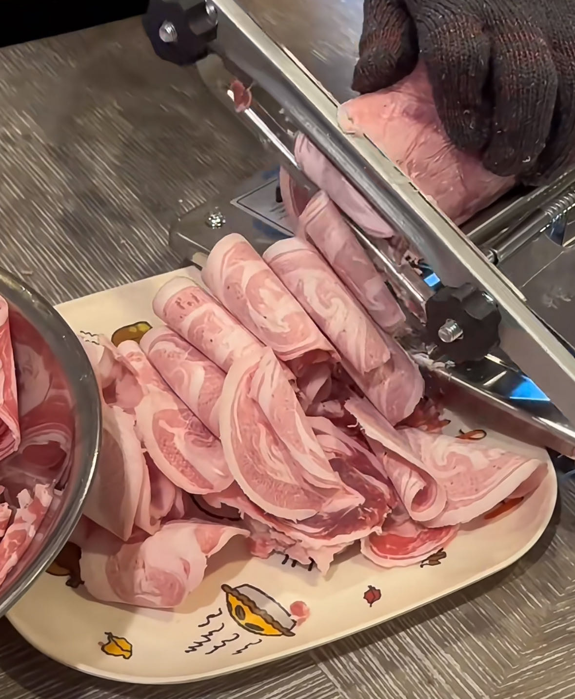

Step 2: Prepare Food Material
Preparing the perfect hotpot begins with selecting a variety of fresh ingredients. From thinly sliced beef shank and tender beef tripe to Spam and quail eggs, every item plays a role in creating a flavorful experience. Using a meat slicer ensures precise and uniform cuts, allowing the ingredients to cook evenly in the boiling broth. The preparation process is as much a part of the joy as the meal itself, setting the stage for a truly authentic hotpot experience